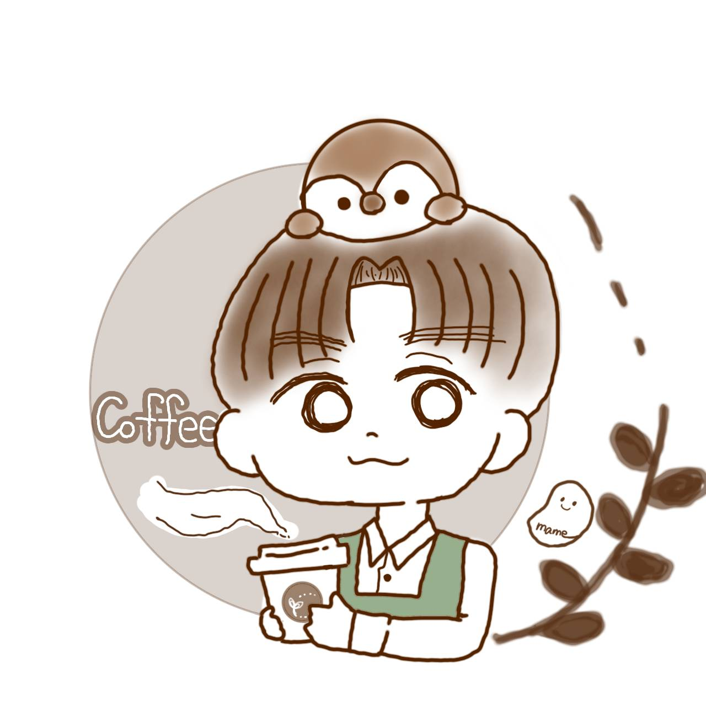

PROPOSAL DOCUMENT
謎解きが解き明かす「答え」に、物語が解き明かす「感情」を加える。
株式会社集遊様が展開される「アソビズ」は、謎解きというアソビの力で企業の人材課題に向き合う、業界でも先駆的な取り組みだと認識しております。「講義→計画→謎解き→振り返り」という体験設計は、主体性や心理的安全性を育む場として高い効果を発揮されていると拝察いたします。
本提案では、そのプログラムに「ストーリープレイング」を組み合わせることで、謎解きでは届きにくい感情・共感の層にアプローチし、研修効果をさらに深めるご提案をさせていただきます。
集遊様のミッション「社会にアソビをインストールする」に、物語というアソビを加える——そのパートナーとしてご検討いただけますと幸いです。
謎解きとストーリープレイングは「競合」ではなく「補完」の関係にあります。両者を組み合わせることで、研修が認知・感情の両面をカバーできるようになります。
| 謎解き研修（アソビズ） | ストーリープレイング（提案） | |
|---|---|---|
| 主軸 | 論理・推理・チームワーク | 感情・共感・自己内省 |
| 体験の特徴 | 答えのある問いを解く | 答えのない選択を重ねる |
| 期待される学び | 主体性・協働・達成感 | 傾聴・自己開示・心理的安全性 |
| 振り返りの深さ | 行動・プロセスの振り返り | 感情・価値観の振り返り |
※ストーリープレイングを単独で、または謎解き研修の後半プログラムとして組み込むことを想定しています。
現行のアソビズのフローに、ストーリープレイングを「感情の振り返り」として追加するイメージです。
研修テーマの学習・目標設定
役割分担・作戦立案
協働・主体性・達成感
共感・自己開示・傾聴
より深い対話が生まれる
謎解きで「チームとして動く」体験をしたあと、ストーリープレイングで「個人として感じる」体験を重ねることで、振り返りの対話が行動レベルから感情・価値観レベルへ深まります。
貴社の研修テーマ（心理的安全性・傾聴・主体性など）に合わせたストーリープレイングシナリオを完全オリジナルで制作します。
既存プログラムのどの位置にストーリープレイングを組み込むか、効果が最大化される設計をご提案します。
新任管理職研修・心理的安全性研修など、異なる研修テーマごとに複数シナリオのシリーズ展開も対応可能です。
ストーリープレイングの質は、プレイ中の面白さだけでは決まりません。シナリオが終わった後、参加者がどんな感情を抱えて席を立つか——その余韻まで含めて設計することが、私の制作における最も重視するポイントです。
「このシナリオを終えた参加者に、何を感じてほしいか」を起点に物語を構築します。後悔・希望・温かさ・決意など、研修テーマに合った感情の着地点をご一緒に設定し、そこへ自然に誘う構成を作ります。
序盤・中盤・終盤で参加者の感情がどのように動くかを意図的に設計します。緊張・共感・葛藤・解放といった感情の起伏を計算することで、振り返りの対話がより深く、自然に引き出されます。
「面白かった」で終わるコンテンツではなく、「あのとき自分はこう感じた」と翌日も語れる体験を届けることが、研修における行動変容につながると考えています。
| 研修テーマ | ストーリープレイングのアプローチ | 期待される効果 |
|---|---|---|
| 心理的安全性 | 「本音を言えなかった過去」を持つキャラクターを演じ、言葉にする難しさと大切さを体感 | 自己開示・傾聴の実践につながる |
| 新任管理職研修 | メンバーとの葛藤・決断を迫られる場面を物語形式で体験 | 管理職としての感情整理・対話力強化 |
| 世代間コミュニケーション | 異なる価値観を持つキャラクター同士の対話を体験 | 相互理解・共感力の向上 |
| 主体性・当事者意識 | 「選択」が物語を動かす構造で、自分の意思決定が結果を変える体験を提供 | 当事者意識と責任感の醸成 |
Uzuにて19作品以上を発表。感情に深く寄り添うシナリオ設計を得意としています。
現代を舞台に、2人で紡ぐ追憶の物語。「再会」「後悔」「赦し」をテーマに、プレイヤーの感情を丁寧に引き出す構成が特徴。Uzu・BOOTH両プラットフォームで販売中。
古くからの掟が支配する村を舞台にした5人用マーダーミステリー。集団の中での葛藤・選択・信頼をテーマに、濃密な人間ドラマが展開。
| フェーズ | 内容 | 期間目安 |
|---|---|---|
| ①ヒアリング | 研修テーマ・ターゲット・実施形式・既存プログラムとの接続点の確認 | 打ち合わせ1〜2回 |
| ②構成提案 | シナリオ概要・登場人物・物語構造の提出・フィードバック | 約2週間 |
| ③制作・修正 | 本文制作・貴社からのフィードバックをもとに2回まで修正対応 | 約4〜6週間 |
| ④納品・導入支援 | データ納品・GM（進行役）向けマニュアル作成・実施時の相談対応 | 納品後随時 |

ストーリープレイング・マーダーミステリーのシナリオ作家。Uzuにて19作品以上を発表（共同制作含む）。「プレイしたあと、しばらく余韻が続く」をテーマに、感情に寄り添うシナリオ制作を得意とする。論理的な謎解きとは異なるアプローチで、参加者の感情・内省・対話を引き出すコンテンツ設計を行う。
ポートフォリオ：https://marimo-portfolio.pages.dev/
ご興味をお持ちいただけましたら、まずはオンラインでの打ち合わせ（30分程度）からお気軽にどうぞ。